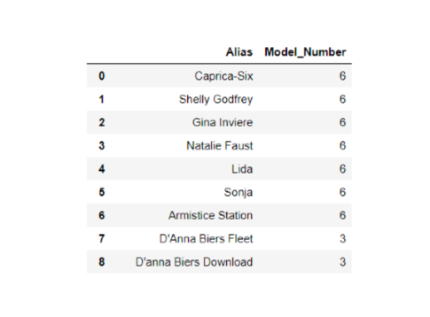
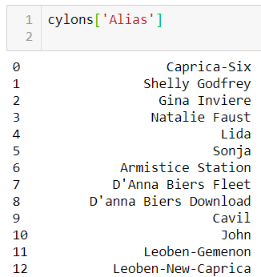
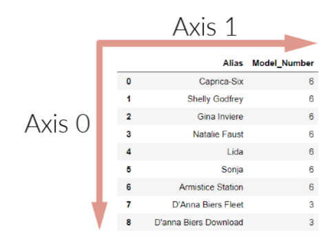
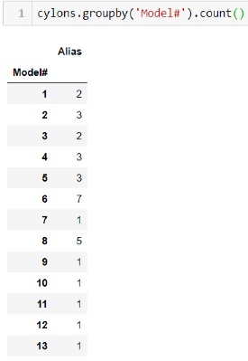

you would access the Model_Number column as follows:


When a DataFrame is stored in a variable, it is a one time snapshot of the DataFrame at the time of storage. If you make changes to the DataFrame, you must either store the new DataFrame in a new variable, overwrite the old DataFrame variable name, or use the inplace = True argument in the function parameters. For example, the following code will only populate a change for the [notebook cell in which it is located: cylons.rename({'Model_Number': 'Model#'}). But by adding an inplace=True parameter, the change will say: cylons.rename(columns={'Model_Number': 'Model#'}, inplace=True). An equivalent method is to reassign the value and call it: cylons = cylons.rename(columns={'Model_Number': 'Model#'}).
There are multiple methods to achieve this task. For a super efficient method see our example below. To see other methods, check out this great Medium article.
You can loop through our cylons DataFrame using .loc as follows:
for i in cylons.index:
print(cylons.loc[i,'Alias'])
print(cylons.loc[i, 'Model#'])
In this example .loc() searches for i, which represents the contents of each cell, and then the column name that is passed, both in brackets.
The groupby function puts all elements of a certain category together by finding each unique value in the column specified and converting that to a new index. If you were to group our cylons_df by the Model# but not apply a function to it, the code can run the grouping, but it doesn't know what to do with the other columns. There would be a new index, with extraneous data that doesn't fit the new index length or match up in anyway. By applying an aggregation function, such as .count(), the code can perform an aggregation on the other columns and keep them in the object. For example, if we run cylons_df.groupby('Model#').count(), our DataFrame index is converted into the unique values of cylon model numbers, and then the other data is counted based on how many there are of each model number.

Have you ever gotten an error similar to this: TypeError: unsupported operand type(s) for +: 'int' and 'str'? If so, its because you were trying to combine data of different types, and Python doesn't like that! Let's take the following code, where we are trying to concatenate a string to the end of an integer to make a new sentence:
for x in cylons['Model#']:
print(x + ' is the best!')
This would throw the following error:
TypeError: unsupported operand type(s) for +: 'int' and 'str'
The TypeError will typically tell you what two datatypes you are trying to combine, as in the above code snippet. So to fix our error, we just have to alter these data types to make them play nice! To do that we can change our integer to a string as follows:
for x in cylons['Model#']:
print(str(x) + ' is the best!')
Now when we run the code, we get the result we are looking for:
6 is the best!
6 is the best!
6 is the best!
6 is the best!
6 is the best!
6 is the best!
6 is the best!
3 is the best!
3 is the best!
McKinney, W. (2013) Python for Data Analysis. O'Reilly Media, Inc, USA.
© 2020 Trilogy Education Services, a 2U, Inc. brand. All Rights Reserved.